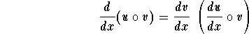
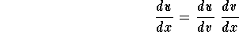
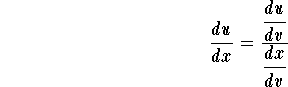
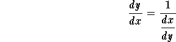

Basic Derivatives 2
Chain Rule
The last formula

is known as the Chain Rule formula. IT may be rewritten as

Another similar formula is given by

Derivative of the Inverse Function
The inverse of the function y(x) is the function x(y), we have
